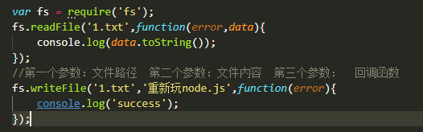

什么是node.js
简单的说 Node.js 就是运行在服务端的 JavaScript。
Node.js 是一个基于Chrome JavaScript 运行时建立的一个平台。
Node.js是一个事件驱动I/O服务端JavaScript环境，基于Google的V8引擎，V8引擎执行Javascript的速度非常快，性能非常好。
源码网址：https://github.com/nodejs/node/tree/master/lib
Node.js 是一个基于Chrome JavaScript 运行时建立的一个平台。
Node.js是一个事件驱动I/O服务端JavaScript环境，基于Google的V8引擎，V8引擎执行Javascript的速度非常快，性能非常好。
源码网址：https://github.com/nodejs/node/tree/master/lib
异步和事件驱动：
异步访问完数据库之后就去进行其他操作，访问过程速度特别快，
当下一步需要数据时会报错，所以需要将下一步操作放到上面的函数中，作为回调函数使用。
node.js中有asyac方法让程序顺序执行
CommonJs模块规范
1、一个文件就是一个模块
2、通过exports和module.exports来导出模块中的成员(声明模块中那些功能可以使用)
3、通过require来加载模块
2、通过exports和module.exports来导出模块中的成员(声明模块中那些功能可以使用)
3、通过require来加载模块
node.js模块（基于CommonJs规范）
1)内置的node.js模块
2)第三方的node.js模块
3)自定义的node.js模块
2)第三方的node.js模块
3)自定义的node.js模块
自定义node.js模块
写法一：
exports.属性/方法 = 功能
写法二：
module.exports.属性/方法 = 变量名
使用：
var 对象 = require('路径及文件夹名');
对象.属性/方法
如下图例：
exports.属性/方法 = 功能
写法二：
module.exports.属性/方法 = 变量名
使用：
var 对象 = require('路径及文件夹名');
对象.属性/方法
如下图例：
fs模块和http模块
fs:file-system 的简写 ，文件系统的意思
在node中想要进行文件操作，就必须引进fs核心模块
这个fs核心模块中就提供了文件操作的相关的api
var fs = require('fs');

这样的话就可以通过链接地址访问不同的页面程序雏形

未完待续~~~